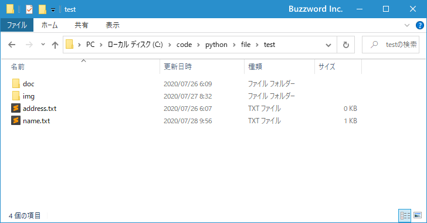
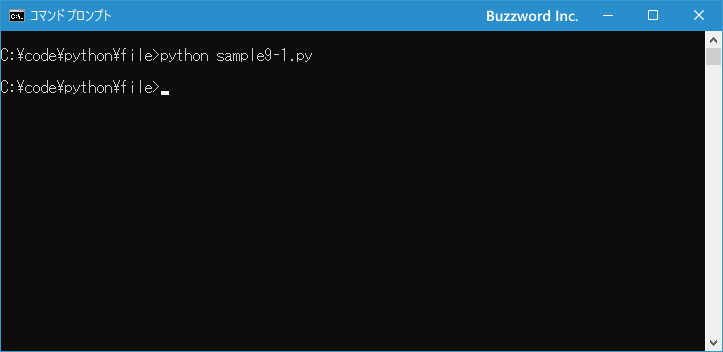
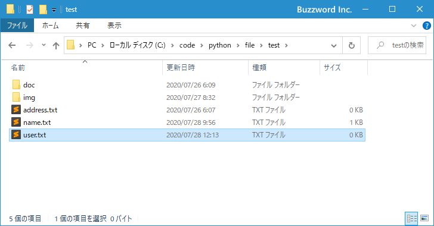
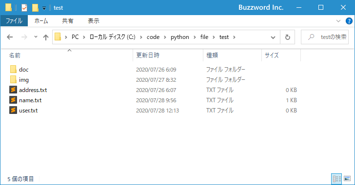

ファイルの作成と削除
Python の組み込み関数である open 関数を使って新しくファイルを作成する方法、および os モジュールで用意されている os.remove 関数を使って作成済みのファイルを削除する方法について解説します。
※ pathlib モジュールを使ってファイルを作成したり削除したりする方法については「ファイルの作成と削除(pathlibモジュール)」を参照されてください。
ファイルを作成する
空のファイルを新しく作成するには組み込み関数の open 関数を使用します。
open(file, mode='r', buffering=-1, encoding=None, errors=None, newline=None, closefd=True, opener=None)
open 関数はファイルを読んだり書き込んだりするためにファイルを開く関数ですが、 open 関数を "w" モードで開いた場合、指定したパスが示すファイルが存在しない場合、新規にファイルを作成します。
※ open 関数については「ファイルを開く/ファイルを閉じる」および「テキストファイルへ書き込む」を参照されてください。
具体的には次のように記述します。
import os
path = './test/uesr.txt'
f = open(path, 'w')
f.write('') # 何も書き込まなくてファイルは作成されました
f.close()
Windows の環境でしか試していませんが、特に何も書き込まなくてもファイルは作成されました。
それでは簡単なサンプルプログラムを作って試してみます。テキストエディタで次のように記述したあと、 sample9-1.py という名前で保存します。
import os
f = open('./test/user.txt', 'w')
f.close()
プログラムと同じディレクトリの中に test という名前のディレクトリがあり、 test ディレクトリの中に次のようにファイルとディレクトリが含まれています。

その後で、次のように実行してください。
python sample9-1.py

指定したパスが示すファイルが作成されました。

ファイルを削除する
既存のファイルを削除するには os モジュールで用意されている remove 関数を使用します。
os.remove(path, *, dir_fd=None)
1 番目の引数に指定したパスが示すファイルを削除します。
具体的には次のように記述します。
import os path = './test/name.txt' os.remove(path)
存在しないファイルを削除しようとすると FileNotFoundError が発生します。
import os
path = './test/name2.txt'
os.remove(path)
>> FileNotFoundError: [WinError 2] 指定されたファイルが見つかりません。: './test/name2.txt'
remove メソッドはファイルしか削除することができません。パスがディレクトリだった場合 PermissionError が発生します。
import os
path = './test/img'
os.remove(path)
>> PermissionError: [WinError 5] アクセスが拒否されました。: './test/img'
それでは簡単なサンプルプログラムを作って試してみます。テキストエディタで次のように記述したあと、 sample9-2.py という名前で保存します。
import os
os.remove('./test/user.txt')
プログラムと同じディレクトリの中に test という名前のディレクトリがあり、 test ディレクトリの中に次のようにファイルとディレクトリが含まれています。

その後で、次のように実行してください。
python sample10-1.py
指定したパスが示すファイルが削除されました。
-- --
Python の open 関数を使って新しくファイルを作成する方法、および os.remove メソッドを使って作成済みのファイルを削除する方法について解説しました。
( Written by Tatsuo Ikura )

著者 / TATSUO IKURA
初心者～中級者の方を対象としたプログラミング方法や開発環境の構築の解説を行うサイトの運営を行っています。